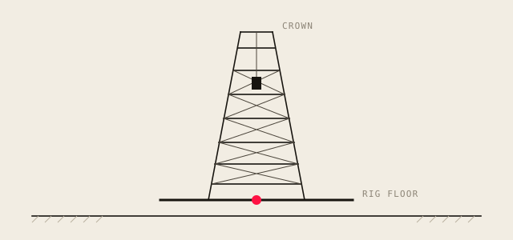

Describe the change in plain words
24 files changed+3 412−180
- Checkout.tsx+610
- Basket.tsx+422
- … and 22 more files
.kicker · h1 · em · .lede · .pull · .eyebrow · .strike
The lede supports the title in one or two sentences. Keep it under about 30 words.
3f8a21c Name of the thing: MVPprototype
Eyebrow label
A pull line restates the point in plain words.
.numbered · .checklist
.compare · .is-picked · .card · .is-strong · .is-accent
Neutral container for a short statement.
Ink border and a hard shadow.
Accent shadow for the one that matters.
.quote-card · .is-light · .timeline · .is-key
Quote someone, or show the exact prompt that started something.
Use the light card for the second, related quote.
.bigstat · .stats · .urlbar
…/reports/q3?preview=charts
.commit · .diffstat · .diffbar · .files · .feed
24 files changed+3 412−180
A short, user-facing description of a change.
Another change, written for users rather than developers.
Keep each entry to one or two lines.
.flow · .is-hot · .u-dim · .cycle
.options · .is-kept · .mini-bars · .stamps · .stamp · .verdict
commercial
open source
kept
Kept: the one we already had.
Must have
Overlaps
Goes first
Can drop
.tree · mark · .is-strong · data-when
Order ├── Line item │ └── Product │ └── Discount └── Customer
Discount fixed per product
Order
├── Line item
│ └── Product
└── Customer
└── Agreement
└── Discount
Discount set per customer agreement
.versions · .is-picked · .wf · .wf-modal · .wf-table · .wf-steps
.wf-modal
.wf-rows
.wf-table
.wf-steps
.points · .columns
week 1 → 248 fixesSay prototype early.
Keep the learning.
People set direction.
.segmented · .figure
Clicking sets data-value on .segmented. Style the variants in deck CSS.

.title-layout · h1.display · .byline · .logtrack
A display title, a lede, a byline, and a chart in the side column.
PresenterEventDate